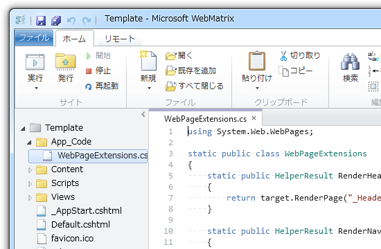

<!doctype html>
<html lang="en">
  <head><meta charset="utf-8">
<meta name="viewport" content="width=device-width, initial-scale=1, shrink-to-fit=no">
<meta name="description" content="いわゆる「だるろぐ」">
<meta name="author" content="daruyanagi">
<meta name="generator" content="Hugo">
<title>WebMatrix &#43; ASP.NET Web Pages でキレイにコーディングしたい（2） - blog.daruyanagi.jp</title>


<link href="/css/bootstrap.min.css" rel="stylesheet" crossorigin="anonymous">


<link rel="manifest" href="/manifest.json">
<link rel="apple-touch-icon" href="/apple-touch-icon.png" sizes="180x180">
<link rel="icon" href="/favicon-32x32.png" sizes="32x32" type="image/png">
<link rel="icon" href="/favicon-16x16.png" sizes="16x16" type="image/png">
<link rel="icon" href="/favicon.ico">
<meta name="theme-color" content="#563d7c">


    
        
        <script async src="https://www.googletagmanager.com/gtag/js?id=UA-53152247-5"></script>
        <script>
        window.dataLayer = window.dataLayer || [];
        function gtag(){dataLayer.push(arguments);}
        gtag('js', new Date());

        gtag('config', 'UA-53152247-5');
        </script>
    
<meta name="og:title"         property="og:title" content="WebMatrix &#43; ASP.NET Web Pages でキレイにコーディングしたい（2）" />
    <meta name="og:site_name"     property="og:site_name" content="blog.daruyanagi.jp" />
    <meta name="og:description"   property="og:description" content="あと、 @RenderPage(&#34;_Footer.cshtml&#34;) は @RenderFooter() などと記述できるとカッコいいな。「フッターはテーマフォルダ直下の“_Footer.cshtml”に書く」。なるべく規約ベースで。" />
    
    <meta name="og:type"          property="og:type" content="article" />
    

    
    <meta name="og:image"         property="og:image" src="https://blog.daruyanagi.jp/no-image.png"  content="https://blog.daruyanagi.jp/no-image.png"  alt="">
    

    <meta name="fb:admins"        property="fb:admins" content="2150442315382" />
    <meta name="twitter:card"     property="twitter:card" content="summary" />
    <meta name="twitter:url"      property="twitter:card" content="https://blog.daruyanagi.jp/entry/2012/08/08/035745/" />
    <meta name="twitter:site"     property="twitter:card" content="@daruyanagi" />

    
    <link href="/css/styles.css" rel="stylesheet">
  
  </head>
  <body>
    <nav class="navbar navbar-expand-lg navbar-light bg-light">
        <div class="container">
            <a href="/" class="navbar-brand"> blog.daruyanagi.jp</a>

            <button class="navbar-toggler" type="button" data-toggle="collapse" data-target="#navbarText" aria-controls="navbarText" aria-expanded="false" aria-label="Toggle navigation">
            <span class="navbar-toggler-icon"></span>
            </button>
            <div class="collapse navbar-collapse" id="navbarText">
                <ul class="navbar-nav mr-auto">
                    <li class="nav-item active">
                        <span  class="navbar-text">いわゆる「だるろぐ」</span>
                    </li>
                </ul>

            <form class="form-inline" action="/search">
                <div class="input-group">
                  <input name="q" id="q" type="text" class="form-control" spellcheck="false" data-ms-editor="true">
                  <div class="input-group-append">
                    <button type="submit" class="btn btn-primary">Find</button>
                  </div>
                </div>
            </form>
            </div>   
        </div>
    </nav>

    <main role="main">
<article class="container" style="margin-top: 3rem;">
    <h1>WebMatrix &#43; ASP.NET Web Pages でキレイにコーディングしたい（2）</h1>
    
    <p class="published text-right">
        公開日：<time>
            2012/08/08
        </time>        
    </p>

    <blockquote cite="https://blog.daruyanagi.jp/entry/2012/08/07/054832">
<p>あと、 @RenderPage("_Footer.cshtml") は @RenderFooter() などと記述できるとカッコいいな。「フッターはテーマフォルダ直下の“_Footer.cshtml”に書く」。なるべく規約ベースで。これも簡単にできそうだ。</p>
<p><cite><a href="https://blog.daruyanagi.jp/entry/2012/08/07/054832">WebMatrix + ASP.NET Web Pages でキレイにコーディングしたい - だるろぐ</a></cite></p>
</blockquote>
<p>これをやってみた。なんていうか、“_Footer.cshtml”なんて固定値、あんまりよく目にするところに書いておきたくない。</p><p><span itemscope itemtype="http://schema.org/Photograph"></span><br />
</p>
<div class="section">
<h3>拡張メソッド</h3>
<p>まずは拡張メソッドを試してみた。 WebPage クラスがあたかも最初から RenderFooter() をもっていたかのように見せかけるのが目的。“App_Code”フォルダを掘って、そのなかに C# クラスファイル（.cs）を作成する。 RenderBody() のシグネチャを参考にこういうのを作ってみた。</p>
<pre class="code lang-cs" data-lang="cs" data-unlink><span class="synStatement">using</span> System.Web.WebPages;
<p><span class="synType">static</span> <span class="synType">public</span> <span class="synType">class</span> WebPageExtensions
{
<span class="synType">static</span> <span class="synType">public</span> HelperResult RenderFooter(
<span class="synStatement">this</span> WebPage target, <span class="synStatement">params</span> <span class="synType">object</span>[] data)
{
<span class="synStatement">return</span> target.RenderPage(<span class="synConstant">&quot;_Footer.cshtml&quot;</span>, data);
}
}
</pre><p>すると、 cshtml ファイルで @this.RenderFooter() という感じで呼べる。</p></p>
<pre class="code lang-html" data-lang="html" data-unlink>:
:
<span class="synIdentifier">&lt;</span><span class="synStatement">div</span><span class="synIdentifier"> </span><span class="synType">id</span><span class="synIdentifier">=</span><span class="synConstant">&quot;site-content&quot;</span><span class="synIdentifier">&gt;</span>
<span class="synIdentifier">&lt;</span>article<span class="synIdentifier"> </span><span class="synType">id</span><span class="synIdentifier">=</span><span class="synConstant">&quot;site-body&quot;</span><span class="synIdentifier">&gt;</span>
@RenderBody()
<span class="synIdentifier">&lt;/</span>article<span class="synIdentifier">&gt;</span>
<span class="synIdentifier">&lt;</span>aside<span class="synIdentifier"> </span><span class="synType">id</span><span class="synIdentifier">=</span><span class="synConstant">&quot;site-sidebar&quot;</span><span class="synIdentifier">&gt;</span>
@RenderPage(&quot;_SideBar.cshtml&quot;) <span class="synComment">&lt;!-- 古い書き方 --&gt;</span>
<span class="synIdentifier">&lt;/</span>aside<span class="synIdentifier">&gt;</span>
<span class="synIdentifier">&lt;/</span><span class="synStatement">div</span><span class="synIdentifier">&gt;</span>

<span class="synIdentifier">&lt;</span>footer<span class="synIdentifier"> </span><span class="synType">id</span><span class="synIdentifier">=</span><span class="synConstant">&quot;site-footer&quot;</span><span class="synIdentifier">&gt;</span>
@this.RenderFooter() <span class="synComment">&lt;!-- 新しい書き方 --&gt;</span>
<span class="synIdentifier">&lt;/</span>footer<span class="synIdentifier">&gt;</span>
<span class="synIdentifier">&lt;/</span><span class="synStatement">body</span><span class="synIdentifier">&gt;</span>
<span class="synIdentifier">&lt;/</span><span class="synStatement">html</span><span class="synIdentifier">&gt;</span>
</pre><p>そうなんだ、<b> this が要るんだ</b>。 @RenderBody() みたいに this を使わずに呼びたかったけれど、これはどうしようもないっぽい。</p>
</div>
<div class="section">
<h3>Func&lt;HelperResult&gt;</h3>
<p>次に考えたのは、 Func&lt;HelperResult&gt; を使うこと。最初の @{……} セクションで RenderFooter を定義しておけば、 this なしの @RenderFooter() で使えるはず。</p>
<pre class="code lang-cs" data-lang="cs" data-unlink>&lt;!DOCTYPE html&gt;
<p>@{
App.Title = App.Title ?? <span class="synConstant">&quot;Untitled Application&quot;</span>;
App.Language = App.Language ?? <span class="synConstant">&quot;en&quot;</span>;
App.Encoding = App.Encoding ?? <span class="synConstant">&quot;utf-8&quot;</span>;
Page.Title = Page.Title ?? <span class="synConstant">&quot;Untitled Page&quot;</span>;</p>
<p>Func&lt;HelperResult&gt; RenderFooter =
() =&gt; RenderPage(<span class="synConstant">&quot;_Footer.cshtml&quot;</span>);
}</p>
<p>&lt;html lang=<span class="synConstant">&quot;@App.Language&quot;</span>&gt;
&lt;head&gt;
:
:
</pre><p>cshtml ファイルはこんなかんじになる。</p></p>
<pre class="code lang-html" data-lang="html" data-unlink>:
:
<span class="synIdentifier">&lt;</span><span class="synStatement">div</span><span class="synIdentifier"> </span><span class="synType">id</span><span class="synIdentifier">=</span><span class="synConstant">&quot;site-content&quot;</span><span class="synIdentifier">&gt;</span>
<span class="synIdentifier">&lt;</span>article<span class="synIdentifier"> </span><span class="synType">id</span><span class="synIdentifier">=</span><span class="synConstant">&quot;site-body&quot;</span><span class="synIdentifier">&gt;</span>
@RenderBody()
<span class="synIdentifier">&lt;/</span>article<span class="synIdentifier">&gt;</span>
<span class="synIdentifier">&lt;</span>aside<span class="synIdentifier"> </span><span class="synType">id</span><span class="synIdentifier">=</span><span class="synConstant">&quot;site-sidebar&quot;</span><span class="synIdentifier">&gt;</span>
@RenderPage(&quot;_SideBar.cshtml&quot;) <span class="synComment">&lt;!-- 古い書き方 --&gt;</span>
<span class="synIdentifier">&lt;/</span>aside<span class="synIdentifier">&gt;</span>
<span class="synIdentifier">&lt;/</span><span class="synStatement">div</span><span class="synIdentifier">&gt;</span>

<span class="synIdentifier">&lt;</span>footer<span class="synIdentifier"> </span><span class="synType">id</span><span class="synIdentifier">=</span><span class="synConstant">&quot;site-footer&quot;</span><span class="synIdentifier">&gt;</span>
@RenderFooter() <span class="synComment">&lt;!-- 新しい書き方 --&gt;</span>
<span class="synIdentifier">&lt;/</span>footer<span class="synIdentifier">&gt;</span>
<span class="synIdentifier">&lt;/</span><span class="synStatement">body</span><span class="synIdentifier">&gt;</span>
<span class="synIdentifier">&lt;/</span><span class="synStatement">html</span><span class="synIdentifier">&gt;</span>
</pre><p>目的は達成したけれど、これはこれでどうなんだろう。とりあえず今のところ単純なラムダ式でなんとかなっているけれど、たとえばRenderFooter でエラー処理を追加する場合（“_Footer.cshtml”がない場合がありえる）を考えると、「レイアウトファイルを簡潔にしたい」という目的からはだいぶ外れてくる。</p><p>RenderFooter をページの初期化に使う“_PageStart.cshtml”へ逃がそうかと思ったけれど、それもダメそうだし。結局、“_PageStart.cshtml”へ退避できるものだけ退避させて、あとはこんな感じにした。</p>
<pre class="code lang-cs" data-lang="cs" data-unlink>&lt;!DOCTYPE html&gt;

@{
Func&lt;HelperResult&gt; RenderHeader =
() =&gt; RenderPage(<span class="synConstant">&quot;_Header.cshtml&quot;</span>);
Func&lt;HelperResult&gt; RenderNavigation =
() =&gt; RenderPage(<span class="synConstant">&quot;_Navigation.cshtml&quot;</span>);
Func&lt;HelperResult&gt; RenderSideBar =
() =&gt; RenderPage(<span class="synConstant">&quot;_SideBar.cshtml&quot;</span>);
Func&lt;HelperResult&gt; RenderFooter =
() =&gt; RenderPage(<span class="synConstant">&quot;_Footer.cshtml&quot;</span>);
}

&lt;html lang=<span class="synConstant">&quot;@App.Language&quot;</span>&gt;
&lt;head&gt;
:
:
</pre><p>マジックワードを一元管理できるだけでも、まぁ、いいかな。</p><p>ちなみに @{……} を DOCTYPE 宣言のあとに書くように変えたのは、 XML ドキュメントを返すときとの統一性を考えて。むかし、 DOCTYPE 宣言の前に @{……} を書いて無駄な改行が入ってしまい、ちゃんと解釈してもらえなかったことがあったので。</p>
</div>
<div class="section">
<h3>おまけ</h3>
<p>調べている途中でみつけたのだけれど、これおもしろいな。</p>
<pre class="code lang-cs" data-lang="cs" data-unlink>@{
Func&lt;dynamic, <span class="synType">object</span>&gt; b = @&lt;strong&gt;@item&lt;/strong&gt;;
}
&lt;span&gt;This sentence <span class="synStatement">is</span> @b(<span class="synConstant">&quot;In Bold&quot;</span>).&lt;/span&gt;
</pre><p>手元で試したらちゃんと動いたし。</p>
<blockquote cite="http://haacked.com/archive/2011/02/27/templated-razor-delegates.aspx">
<p>Note that the delegate that’s generated is a Func<T, HelperResult>. Also, the @item parameter is a special magic parameter. These delegates are only allowed one such parameter, but the template can call into that parameter as many times as it needs.</p>
<p><cite><a href="http://haacked.com/archive/2011/02/27/templated-razor-delegates.aspx">Templated Razor Delegates | You’ve Been Haacked</a></cite></p>
</blockquote>
<p>なんでこうなるのかイマイチよくわからんけど……。 @ って結局なんなんだ（＠ｗ＠！</p>
<ul>
<li><a href="http://shiba-yan.hatenablog.jp/entry/20110423/1303562559">Templated Razor Delegates &#x304C;&#x9762;&#x767D;&#x3044; - &#x3057;&#x3070;&#x3084;&#x3093;&#x96D1;&#x8A18;</a></li>
</ul>
</div>

    <footer>
        
        

        
            <p class="text-right">
                <a href="https://github.com/daruyanagi/blog.daruyanagi.jp/tree/master/content/entry/2012/08/08/035745.md"> View on GitHub.com</a>
                / 
                最終更新日：<time>2020/05/04</time> 
            </p>
        
    </footer>
</article>

<section class="container text-center"> 

    <p>
        
        <a href="https://blog.daruyanagi.jp/entry/2012/08/07/054832/">&laquo; Older</a>
        
        <span > - </span>
            <a href="/">🏠 Home</a>
        <span > - </span>
        
            <a href="https://blog.daruyanagi.jp/entry/2012/08/08/043041/">Newer &raquo;</a>
        
    </p>    
    
</section>


    </main>

    <footer class="text-muted"></footer><div class="container">

    <script async src="https://pagead2.googlesyndication.com/pagead/js/adsbygoogle.js"></script>
    <ins class="adsbygoogle"
         style="display:block; text-align:center;"
         data-ad-layout="in-article"
         data-ad-format="fluid"
         data-ad-client="ca-pub-0944887782985208"
         data-ad-slot="1125180844"></ins>
    <script>
         (adsbygoogle = window.adsbygoogle || []).push({});
    </script>

    <div class="spacer" style="height: 3rem;"></div>

    <p class="float-right">
    <a href="#">Back to top</a>
    </p>
    <p>
        &copy; <a href="//daruyanagi.jp">daruyanagi</a> 2007-2020. </p>
</div>

</footer>

    <script src="//code.jquery.com/jquery-3.4.1.slim.min.js" integrity="sha384-J6qa4849blE2+poT4WnyKhv5vZF5SrPo0iEjwBvKU7imGFAV0wwj1yYfoRSJoZ+n" crossorigin="anonymous"></script>
    <script src="/js/bootstrap.bundle.min.js" crossorigin="anonymous"></script></body>

    <script src="https://cdn.rawgit.com/google/code-prettify/master/loader/run_prettify.js?skin=sunburst"></script>

    <script>
      const pres = document.getElementsByTagName("pre");
      for (var i = 0; i < pres.length; i++)
      {
        pres[i].classList.add("prettyprint");
        
      }

      const tables = document.getElementsByTagName("table");
      for (var i = 0; i < tables.length; i++)
      {
        tables[i].classList.add("table");
      }

      const blockquotes = document.getElementsByTagName("blockquote");
      for (var i = 0; i < blockquotes.length; i++)
      {
        blockquotes[i].classList.add("blockquote");
      }
    </script>
</html>
